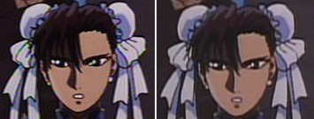
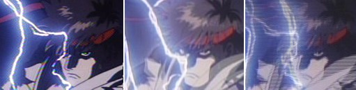

Street Fighter II: The Animated Movie Anime Review
{kind=link}
Street Fighter II: The Animated Movie
 / Movie / Action / 16-up
/ Movie / Action / 16-up
Bottom Line
A simple, solid action flick with outstanding brawling action.
It’s Like...
...A Hollywood Street Fighter II movie reborn as anime that doesn't suck.
Vital Stats
Original Title
ストリト ファイター II
Romanized Title
Street Fighter II
Animation Studio
Group Tac
US Release By
Genre
Superpowered Street Fighting
Series Type
Movie
Length
101 min (uncut) / 98 min (English version)
Production Date
1995
What's In It
Categories
Look For
- Fistfights of every kind and shape
- Dub Metal
- Psychics
Objectionable Content
- Violence: 3 (significant)
- Nudity: 2 (moderate)
- Sex: 1 (mild)
- Language: 2 (moderate)
Plot Synopsis
Guile is a soldier with an unenviable task--join up with a Chinese Interpol agent, Chun-Li, and track down the most notorious international criminal in the world, Bison, head of the Shadowlaw organization. Bison has been picking out the world's best fighters and using his psychic powers to possess them, slowly building his empire. Most recently, Bison has taken an interest in Ken and Ryu, the two best street fighters in the world. The pair of martial artists trained as brothers, but have taken different paths in life--Ken as the flashy street fighting actor, and Ryu as a wandering brawler, fighting any taker in every corner of the world to increase his skill. Bison has at his disposal a number of other unpleasant henchmen, and Guile and Chun-Li, working with Ken and Ryu, are going to have their hands full dealing with them.
Quick Review
Switch to Full ReviewOf the many fighting games reborn as anime, Street Fighter II: The Animated Movie stands tall as being one of the best looking and having some of the most solid, semi-realistic brawling in any anime, period. It's also memorable for the notably Hollywood-action-movie style of directing and storytelling, for better and worse. The plot is basic but functional, at least giving the impression that you're not just watching a string of fights, although the gaps between the meaningful action scenes are a bit large. The expected glut of characters is also an issue, but the focus is firmly on the four heroes. Neither the English dub nor Japanese version have notably good acting, but the English version forgoes the original dramatic instrumental soundtrack for louder, more fun big-name metal; which is better comes down to taste and the mood you're in.
It's too simple of an action movie to recommend to a general audience, but it's an absolute must-see for fans of the Street Fighter games, and certainly worth the time for fans of fighting game-based anime and brawling action in general.
Full Review
Switch to Quick ReviewOf the many fighting games reborn as anime, Street Fighter II: The Animated Movie is the only one that can claim to be based on the game that started it all. While the plot fails to do much more than convince you you're not just watching a string of fights, the film is second to none when it comes to superbly animated brawling that's about as close to realistic as anything in the genre. Couple that with a distinctive Hollywood-action directing style, and you get a movie that should satisfy just about any action fan's desires.
The story is about par for a decent action movie. Simple and unoriginal, it's functional in getting characters around and building up a reasonable degree of empathy for the good guys and enmity for the bad guys. It tends to drag just a bit between action scenes, but many of the fights are meaningfully connected to the plot, and at times even dramatically effective.
That said, about the only part that might be called "good" is the brotherly bond established between Ken and Ryu. The flashbacks to their youth and the mix of camaraderie and uncertainty in their relationship are done fairly well.
On the relative down side, almost none of the multitude of plot lines from the game(s) appear here. It's a pity, since a couple of them could have been decent if fleshed out to feature length. More so since they would have been much more interesting than what we get instead. At least it's closer to the game's plot than the Van Damme movie. Speaking of which, the animated version quite frankly beats the living daylights out of the live-action take, Raul Julia or no.
On a related note, it's interesting that veteran director Gisaburo Sugii (talk about a resume--he directed episodes of Astro Boy) used a style that owes more to '80s Hollywood action movies than anime. This style fits well, and makes the movie somewhat distinctive among its kin. Sugii also co-wrote the script, which may explain why the live-action flavor extends past simple visual style and into the structure and feel of the whole film.
Even by action movie standards, though, there is one obvious problem with the story: The glut of characters. It's nothing new in fighting-game-derived anime, but of the host of unrelated brawlers our heros meet on the long road to their showdown with big bad Bison, most are just there to satisfy the "I want to see Zangief fight somebody!" crowd. On the positive side, the film wisely focuses on its central cast, and the four of them (plus a couple others) have a reasonable amount of personality. The rest just show up long enough to assault somebody (usually for no apparent reason whatsoever) then disappear. It's not really a shock, and it could have been considerably worse.
But you know what? When it comes down to it, none of that is really important. What's important is that visually, Street Fighter II is second to none.
The art is high quality, the animation is fluid and lifelike, and the whole package looks expensive and polished--real theater-quality stuff. In addition to the live-action directing style, the visuals also do a great job of capturing the feel of the classic games. The character designs are even better than most versions of the games (but still quite recognizable), the personalities fit well, and the moves are simultaneously faithful and surprisingly believable (though certainly not realistic by any stretch).
And the action? Among the best looking brawling you're going to find, bar none. Surprising reserve is shown with the superhuman abilities; the action is mostly straight melee with an occasional over-the-top move and a surprisingly rare flash of magical-type stuff. Bison is the only character with serious and frequently used supernatural powers, and those look very cool--landing just above the ground, for example--even if they are a little overboard. (Incidentally, if you're wondering, they never make any effort to explain any of the superhuman abilities.)
The acting in Manga's English dub is not terribly noteworthy, but isn't bad either. The original Japanese version was notoriously unavailable in the US for many years, but Manga finally remedied that. It features several notable live-action personalities in the voice cast, but in truth I didn't like the casting. Live action stars Kenji Haga as Ken and Miki Fujitani as Chun-Li sound good, and veteran voice actor Masane Tsukayama is okay as Guile. Takeshi Kusaka, on the other hand, sounds a bit elderly as main villain Bison and Kojiro Shimizu's voice just doesn't fit Ryu (though at least he sounds distinctive, perhaps the result of being both a live-action actor and singer). The rest of the crowd is unremarkable. Also a problem is that some of the martial arts yelling (particularly Fei Long's, but also Ryu's) is so high-pitched and exaggerated that it sounds downright silly. At least the dramatic acting, or what little of it there is, is decent.
There seems to be a lot of debate over which version of the background music is better--the original Japanese score, which is mostly standard theatrical background music with a vocal tune or two, or the American dub version, which credits rock tunes by several recognizable groups (Alice in Chains and Korn, to name a couple, though KMFDM for some reason gets the biggest billing). Quality is relative since they're totally different styles, but the original score makes for a somewhat more dramatic presentation, particularly toward the end. Most notably, it foregoes background music entirely in almost all of the fights, an interesting effect. The metal-heavy American version, on the other hand, is more fun, particularly in a couple of the fight scenes.
A final note: There are four different versions of the film floating around, three of which are edited to various degrees. See the notes for extensive details, but setting aside the heavily edited PG-13 US theatrical release, the older "unrated" version and the "UK Edition" on the newer DVD release are nearly identical (both remove bits of a Chun-Li shower scene and tighten up a few scenes elsewhere, though the newer one cuts less of the brief nudity), while the Japanese language version on the DVD is complete. Though there is finally an unedited version available, it's odd that the "mature" American version didn't include the footage, as the entire shower scene is so short it barely even seems gratuitous--all of two shots containing nudity totaling maybe ten seconds.
Overall, Street Fighter II: The Animated Movie is an absolute must see for any fan of the game or of fighting game anime in general. Admirers of fine animation or just some good fisticuffs are also likely to find something to enjoy. Action nuts may be disappointed at the plot-to-punching ratio, but that little change makes this one at least watchable for people who aren't fans of the video game, though it's definitely not going to win any awards for the story.
Have something to say about this anime? Join our newly-resurrected forums and speak your mind.
Related Recommendations
This is along the lines of the many other fighting-game-derived anime out there, among them Night Warriors: Darkstalkers' Revenge, Battle Arena Toshinden, the Fatal Fury series, and a host of other Street Fighter animated incarnations. The Fatal Fury movie is probably the top of the pack in terms of plot, but this is almost certainly the best in terms of action; the only thing that is even in the same league is Street Fighter Alpha: The Movie.
Notes and Trivia
Street Fighter II: The Movie is, of course, based on Street Fighter II, the seminal fighting game by Capcom. There is no Street Fighter 1 anime, and the original Street Fighter video game is obscure to put it mildly. The story of this movie contains a few references to the various plotlines in the original game, but it's basically self-contained. It also has nothing to do with the stories of the many other Street Fighter anime incarnations.
Some random bits of trivia: Akuma appears briefly in the background during the film, but has no speaking part. Funaki Masakatsu, who voices Fei Long in the Japanese version, is a pro wrestler in addition to an actor. Kusaka Takeshi, who voices the main villain (Vega in the original, Bison in the US naming scheme), is better known as an occasional live-action actor; his best-known performance is probably a role in Akira Kurosawa's final film, Madadayo.
There has been so much confusion and misinformation about the varioius versions of this title floating around over the years that I'm going to go ahead and take some time to clear up as much as I can here. I've double checked all of this, so there shouldn't be any mistakes.
Naming Quirks
On the topic of confusing names: In the English version of the games (and therefore the dub of this movie, as well as the English subtitles), the skinny guy with the mask is named Vega, the big boxer is Balrog, and the main villain is Bison. But, in the original Japanese versions, Vega is the main villain, the masked Spaniard is Balrog (Balrog Fabio La Cerda, apparently), and the American boxer is M. Bison (the M. ostensibly stands for "Mike," obviously a reference to the famed real-life boxer). I've heard rumor that the boxer's name was changed due to the threat of a lawsuit from Mike Tyson, but even if true I'm not sure why the rest of the shuffle happened. Another funny name is E. Honda, who despite being a Japanese sumo wrestler is named Edmond (even in the Japanese version). Finally, the evil organization is dubbed as "Shadowlaw," while in the Japanese version they're saying "Shadowloo."
Edited Versions
Now to cover the seriously confusing situation about which versions are available where.
The movie was released theatrically in both the US and Japan, although the US theatrical version was edited significantly to get a PG-13 rating. There have since been two additional edited versions released, for a total of four versions. They are:
- An edited PG-13 version for the US market that saw a limited theatrical release as well as a VHS run. It is sans much of the gore and most of the Chun-Li shower/fight scene. The video is now out of print.
- An "unrated" US version that is less edited (a few cuts for time and both shots showing nudity in the shower scene). This was the only version available in the US until 2006, first on VHS, then on one of the earliest anime DVDs; both were dub-only.
- The "UK" version, which is as far as I can tell nearly identical to the "unrated" US release with the exception of one additional upper-body shot of Chun-Li in the shower left in. It still contains several minor edits for time and has one shot removed from the shower scene. This version is now available in the US on the dubbed side of the 2006 DVD release from Manga.
- The original unedited version, which was not available in the US at all until Manga's 2006 DVD re-release; it's on the Japanese side of that disc.
Due to the editing and exaggerated runtime numbers, there's some confusion about how long the movie actually is; the older US DVD version claimed a 96-minute runtime even though it's actually 98 including the credits, while the "UK Edition," regardless of what the box says, is an almost-identical 98 minutes and a few seconds, including the credits. The fully uncut Japanese version is 101 minutes; more than half of that difference is just because the Japanese credits are longer.
For all the fuss that's been made by fans over the years about the missing shower scene, I must say that there really wasn't much cut--all of about 10 seconds of nudity. The other cuts are not substantive--mostly bits here and there to pick up the pace a little.
Exact Edits Made
For those who just have to know what the edits are, I went through and compared the English ("UK Edition") and Japanese (completely uncut) versions on the 2006 Manga DVD release; here is a list of every single cut (warning: spoilers, if you care).
- About 20 minutes in, at the very end of the section with Fei Long, about 12 seconds are cut from the part where they silently part ways, mostly from a long shot of Ryu walking away in silence.
- Later, in Calcutta, about 8 seconds are cut from the scene where the kid spills the milk--bits and pieces throughout to speed up the scene slightly. At the end of the same scene another 6 seconds are cut from the end of the shot where Ryu walks away.
- In the infamous lead-up to the Chun-Li fight, about 25 seconds are cut; most of the edits are pans of buildings, but there is one long pan of Chun-Li's exposed backside in the shower removed as well as part of a pan away from the closed shower door. The Unrated US version also cut one more shot of Chun-Li's chest. Interestingly, the UK and US scenes are exactly the same length, and the breast shot appears in a different place in the UK version compared to the original; it appears that they just replaced one of the other shots in the US version with the footage of Chun-Li to avoid having to re-do the audio in the scene.
- Around an hour into the film, there is a total of 13 seconds cut from the build-up to the villain's jet running Ken's car off the road; the edits are all shots of the lights in the sky and Ken driving in silence.
- When the head villain is finished telling off Sagat, a shot of the boxer following his boss out of the room and a long shot of Sagat left standing alone are removed, for a total of 10 seconds.
- Finally, in the establishing shot of the mountains in Thailand immediately following that scene, the shot starts a little later, making the total pan 4 seconds shorter overall.
The total of these minor edits is 75 seconds or so of runtime. The Japanese credit crawl is additionally a minute and 45 seconds longer, for a total difference of about 3 minutes of runtime.
Reader Tom, who went to considerable effort to create his own ultimate fan-edition DVD to make up for shortcomings in Manga's release, helped confirm the edits listed above and pointed out a couple of additional differences between US, UK, and Japanese versions:
- A one-second fade-out of Ken driving away after the encounter with Thunderhawk lacks the fade, instead cutting abruptly to the next scene. This difference even exists on the Japanese side of the 2006 US DVD; the fade only seems to exist on versions released in Japan (or at least some of them).
- While the UK version and 2006 US uncut version have the same video apart from the single Chun-Li cut mentioned above, two bits of profanity were changed in the US version's audio. Specifically, Dee Jay's line "Yahoo! They are some badass mothers. I am honored." and Guile's line "Bison, I'm gonna rip your lousy heart out, you filthy bastard!" both included an F-bomb in the UK edition.
DVD Mastering Notes
Tom further noted that the Japanese DVD release appears to have been done from a different master than either the UK or Japanese versions on Manga's 2006 US release. Most noticeably, the DVD released in Japan has significantly brighter video, which, given the relatively dark scenes, is a plus; the sharpness and clarity otherwise appear similar, and all of the above are letterboxed rather than anamorphic widescreen.
Based entirely on the fact that the Japanese DVD is 30fps interlaced, while the Japanese side of the US version is 24fps without interlacing, the video on that US release apparently comes from a different master than the Japanese DVD version, which would also explain the differing fade mentioned above. This is just a guess, but it's possible that this non-interlaced 24fps master was the one used to produce the interlaced PAL version for the UK market, which would explain why the color balance would be similar between the two, and why both would feature the different fade in the scene with Ken.
US DVD Review
Manga 2006 DVD
Manga has finally replaced its old, inadequate DVD version with an "Uncut" 2006 disc. The new release is far from perfect, but relieves the confusion by finally including the long-overdue unedited version with a Japanese language track (it's about time). It's being advertised as having the UK soundtrack (in the dub) by KMDFM, although this is no different from the score used in the older US release and there's no particular reason I can see to single out that band from the others on the English soundtrack.
The disc itself is a bit of a disappointment; since even the "UK Edition" is slightly edited, it comes on a 2-sided DVD, with the uncut Japanese subtitled version on one side (thankfully with soft subtitles), and the English dubbed version on the other. Both languages come in your choice of Dolby 2.0 or 5.1, but both, sadly, are letterboxed, rather than anamorphic widescreen.
This isn't a videophile site, but the video transfer in the two versions are noticeably different. The English version has interlaced video and the transfer looks a little less vibrant, but is brighter, making it a little easier to follow the action in the darker scenes (of which there are a lot). Since it's a proper film-style 24 fps and claims to be the "UK" version, I wonder if it wasn't converted from an interlaced PAL master. The Japanese version is not interlaced, and richer-looking, but also seems to suffer from a little more color fringing and is dark enough that it was hard to pick out details in some of the darkest scenes. It's also a proper 24 fps progressive. Overall, the Japanese version looks a little better (and benefits from not being interlaced if you're watching on a computer or modern TV), but it's sad that neither is a proper widescreen transfer.
To illustrate the fairly subtle differences, here are a couple of images (they only show a small part of the full frame, to highlight details):


In the top image, the left is from the Japanese side of the DVD and the right is from the English one (neither is deinterlaced, since there was no motion in this shot). Note the color fringing on her bow on the left, and the slightly softer colors on the right. In the bottom image, the left is from the Japanese side, the middle is computer-deinterlaced from the English side, and the right is interlacing-intact from the English side. This shows some of the color difference, but mostly just illustrates what interlacing will do if you aren't watching it on an old-fashioned TV.
Extra features are limited to basically just the trailer for the film on the English side and some simple character bios on the Japanese side (with clips from their fight scenes). There's also a decent-looking full-color promotional mini-comic included in the box--it's a scene from the movie to whet your appetite, nothing more. The box, by the way, is a standard clamshell case, but comes with a paper outer slipcover that is bright red and has an embossed fist on it. Depending on whether the product photo shows the outer cover or the actual box, it can look like there are two versions, but there's only the one.
Original 1997 DVD
The original 1997 release from Manga is not what you'd call a stellar DVD (although to their credit, it was one of the earliest anime DVD releases, period). The US-release disc features widescreen, letterboxed video (not anamorphic), and includes the English stereo soundtrack (no Japanese at all--highly disappointing), and an English subtitle track. It is the American "unrated" version, which is still slightly edited from the original, as noted.
Parental Guide
Soon to be available in the US in two versions, not including the old PG-rated one which removed much of the gore, nudity, and harsh language. Both the unrated and completely uncut versions probably qualify as 16-up on account of the violence and nudity, though 13-up isn't entirely unreasonable.
Violence: 3 - Not extremely graphic, but plenty of violence and some gore.
Nudity: 2 - A brief shower scene and one long fight with Chun-Li in her nightclothes. The dubbed versions remove some of the already brief nudity.
Sex/Mature Themes: 1 - Some romance between Ken and his wife-to-be, nothing more.
Language: 2 - Some expletives.
Staff & Cast
Japanese Cast
(Japanese names listed family name first)
Ryu: Shimizu Koujiro
Ken (Ken Masters): Haga Kenji
Chun-Li: Fujitani Miki
Major Guile: Tsukayama Masane
Vega (US: Bison): Kusaka Takeshi
E. Honda (Edmund Honda): Gouri Daisuke
Fei Long: Funaki Masakatsu
Deejay: Matsuo Ginzou
Thunderhawk: Iizuka Shouzou
Cammy (Cammy White): Sasaki Yohko
Dhalsim: Kishino Yukimasa
Blanka: Ishizuka Unshou
Zangief: Kanao Tetsuo
Balrog (Balrog Fabio La Cerda) (US: Vega): Shiozawa Kaneto
Sagat: Sasaoka Shigezou
Bison (Mike Bison) (US: Balrog): Nakata Johji
Eliza: Tsuru Hiromi
Gouken: Amamoto Hideyo (aka Amamoto Eisei)
Girl: Toyoshima Machiko
Gouki (US: Akuma): Appears, but doesn't speak.
Crew
Director: Gisaburo Sugii
Writer: Kenichi Imai, Gisaburo Sugii
Availability
As of 2006, is finally available in the US from Manga Video on uncut hybrid DVD. Previously available as an "unrated" dub-only DVD with minor editing. There were also two VHS versions, both long out of print, one of a heavily-edited PG-rated version, the other the same as the slightly edited "unrated" DVD.
RightStuf carries the new uncut DVD.
Looking to buy? Try these stores:
RightStuf (search) |
AnimeNation |
Amazon